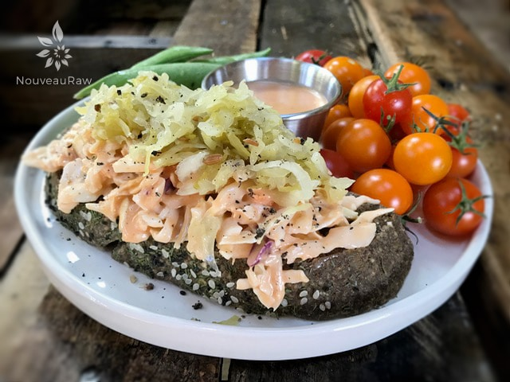

Reuben Sandwich
 The Reuben sandwich is normally a hot sandwich of corned beef, Swiss cheese, with Russian or Thousand Island dressing, and sauerkraut. All grilled between slices of rye bread. Of course numerous variations exist., and I am here to set the new norm, well for me anyway.
The Reuben sandwich is normally a hot sandwich of corned beef, Swiss cheese, with Russian or Thousand Island dressing, and sauerkraut. All grilled between slices of rye bread. Of course numerous variations exist., and I am here to set the new norm, well for me anyway.
I wanted to make a raw caraway and dill bread for quite some time, and I had the recipe developed, but it somehow got lost in the shuffle.
One evening I had decided it was time to go through my spice drawers and check each one for freshness. They say that most spices start to lose their flavor after six months.
I was standing there… open, sniff, replace lid, open, sniff, replace lid, open, sniff, replace lid, *toss*, open, sniff, replace lid, you get the picture.
That was until I arrived at the caraway seed jar. I removed the lid, sniffed, went to replace the lid, but decided not to. I returned the jar under my nose where “we” got lost in time, it was a bonding moment. hehe
There is something about both caraway and dill that just makes the choir sing for me. If they made a candle that smelt like caraway and dill, I would have one lit in every room.
After sniffing a few seeds up my nose, by accident, it jogged my memory… and made me snort. Reuben sandwiches! It was time to create my raw version of Reuben sandwiches. So, here is a recipe mashup using several different components. This sandwich really satisfies that craving for comfort food. I hope you enjoy it.
Recipe mashup:
Preparation:
- This sandwich is very filling, so I suggest creating it as an open-face sandwich to start off with.
- Layering from the bottom up; one piece of raw Caraway and Dill Bread
- Spread 1-2 Tbsp of Raw Thousand Island Cole Slaw across the bread.
- Then place a layer of Vegan Swiss Cheese over the cole slaw.
- Top with Raw Cabbage Kraut, perhaps a pinch of sprouts and enjoy!

© AmieSue.com